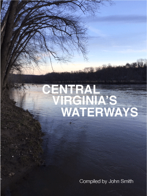

Kayaking for Dummies
Category: How-To
Price: $29.99
This comprehensive guide is a must-have for any newcomer to the
world of kayaking. From choosing the right vessel to embarking on
your first adventure - this book will cover it all.
Photographic Guide to Central Virginia's Waterways
Category: Photography
Price: $49.99

This book is a collection of beautiful photographs taken by various amateur
and professional photographers around the Central Virginia area giving
the reader a variety of perspectives on the area's waterways.
Kayak Paddle
Category: Paddles
Price: $149.99

The Paddly paddle from Acme offers beginning and recreational paddlers excellent value and performance.
Dry Bag
Category: Gear Bags
Price: $159.99

This 115-liter Acme dry pack keeps your gear secure and dry during all of your kayaking adventures.